潘湘如醫師｜家庭醫學部 高雄榮民總醫院
舉手投票：肌少症是……？
答案在接下來幾頁揭曉。
站不太起來、爬樓梯要扶
這些不是「老了本來就這樣」——是肌肉正在流失，而且可以介入。
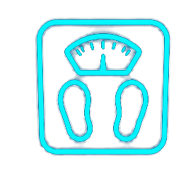
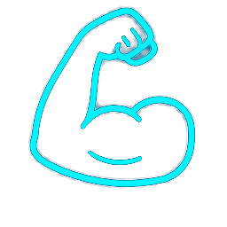
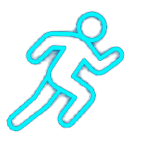
三項中肌肉量＋（肌力或體能）任一項不足，就達到「肌少症可能」的門檻。
放著不管，會往這裡走
篩檢不是為了貼標籤，是為了在跌倒與骨折之前，先把介入做進去。
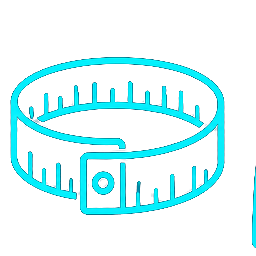
陽性判定：SARC-F ≥ 4 分，或 SARC-CalF ≥ 11 分 → 進入 AWGS 2019 判定。
AWGS 2019 數字對照
低於切點越多項，越需要優先介入與轉介評估（DXA／BIA 確診）。
蛋白質要「夠」，還要「分散」
每餐吃到 2–3 份蛋白質；牙口不好就換型態：豆腐、蒸蛋、絞肉。
散步不夠，要「出力」
目標：每週 2–3 次，每次約 20 分鐘阻力運動
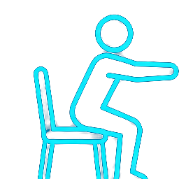
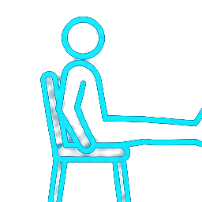
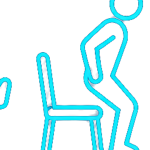
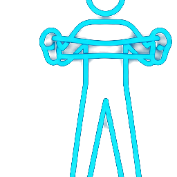
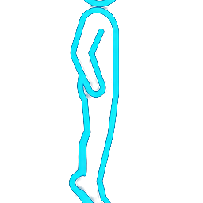
喘到說不出話、胸悶、頭暈就停下來。心臟病、剛開刀、關節嚴重疼痛者請先問過醫師。
拖動滑桿，比較規律介入前後的日常功能
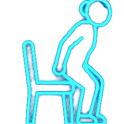
起立要撐扶手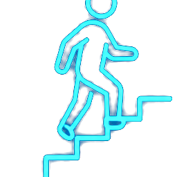
爬10階樓梯要中途休息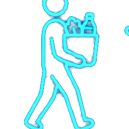
拿重物、開罐吃力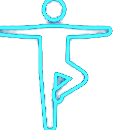
跌倒風險偏高改變幅度因人而異，關鍵是「早篩檢＋持續做」，不是等奇蹟。
把跌倒風險也降下來
家醫部的隨身篩檢工具｜單頁 PWA，離線可用，門診、社區通用
n < 10 不顯示百分比
今天，你願意帶走哪一件事？
謝謝聆聽 歡迎提問
篩檢工具｜philia81301-commits.github.io/sarcopenia-clinic